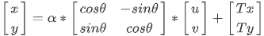

本项目主要通过视觉定位引导激光对工件相应位置进行字符打标。
项目主要分为相机标定与关联标定、定位引导、结果复检三个部分，各部分内容如下：
相机标定目的是确定相机像素当量、畸变参数等，可实现像素坐标到物理坐标的转换。
由于激光振镜坐标系是二维坐标系，与相机坐标系相同，所以关联标定即是确定二维相机图像坐标系（下图绿色坐标系）到二维打标平面坐标系（下图黑色坐标系）之间的转换矩阵。
坐标系间变换关系如下：

其中(x,y)为激光振镜坐标系下坐标，(u,v)为相机坐标系下坐标，α为坐标系间缩放比例，θ为坐标系间旋转角度，(Tx,Ty)为坐标系间原点间距。所谓标定即是确定α、θ以及(Tx,Ty)的值。
定位引导即是通过视觉处理获取目标在图像中的位姿坐标（位置与角度），然后根据关联标定结果将其转换为机构坐标，使其可以进行相应的移动。
下图为待激光打标工件在治具上的位置示意图，圆（绿色）周围白色区域即为字符区。在打标时只要告诉激光振镜工件的中心位置及打标起始位即可，所需的图像信息即为工件圆心坐标（蓝色）及工件在治具上位置角度θ（本项目为上下治具边缘的直线角度的平均数）即可。同时在视觉引导时需要确定工件在治具上位置是否合理，即dx与dy值处于一定范围内，在超限时认为工件装夹存在问题，此时反馈NG信号，使机构重新装夹或抛料。

根据上述分析，确定定位引导流程如下：
结果复检的目的在于检测激光打标字符的位置是否合理，由于激光打标的字符实际是按照圆周分布，如图下图所示，所以其结果复检可按照该圆周的位置和大小进行量化。

按照量化分析，结果复检流程如下：
使用“靶标相机标定工具”即可。
使用“九圆标定方法”进行关联标定，其步骤如下：
（1）使用激光振镜在一块标定板上采用线性阵列的方式打一 3 * 3 圆阵列（如下图红色区域所示），并记下每个圆在激光振镜下的圆心坐标；
（2）将做好的标定板放在待加工工件工装位置，使用相机进行图像采集，将采集图像链入“九圆关联标定工具”中；
（3）将记录的激光振镜坐标系下圆心坐标输入到下图绿色区域内；
（4）其余参数设置根据实际情况设置即可；

（5）需要特别注意“九圆关联标定工具”两个输入参数“X轴方向”和“Y轴方向”问题，根据工具定义，振镜坐标转换到统一的虚拟坐标系下方向为向右正，向下正，实际参数0为正方向，1代表反方向；

根据“2.2定位引导方案分析”的检测流程，结合项目实际情况对视觉工程进行介绍：


根据“2.3结果复检方案分析”的检测流程，结合项目实际情况对视觉工程进行介绍：